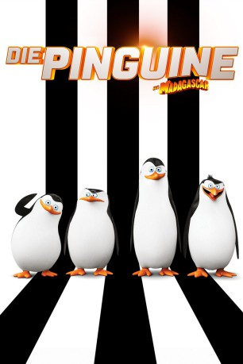

#648 Die Pinguine aus Madagascar
Alternativ: Penguins of Madagascar
 
 IMDB-Wertung: 6.7 / 10
IMDB-Wertung: 6.7 / 10  Metascore: 53
Metascore: 53 
Zehn Jahre, nachdem Skipper, Kowalski, Rico und Private Spaß und abenteuerliche Spezialeinsätze als Lebensziel ausgerufen haben, stehen die vier Pinguine aus dem New Yorker Zoo vor ihrer größten Herausforderung. Oktopus Dave will sich an allen Pinguinen rächen, sie in monströse Kreaturen verwandeln, weil ihm die niedlichen Vögel in jedem Tierpark die Schau stahlen. Doch Dave rechnet nicht mit der souveränen Coolness der Frackträger und der Unterstützung, die sie durch die Superprofis vom Agententeam "Nordwind" erhalten.
Jahr: 2014
Dauer: 92 Minuten
FSK: 0
Land: USA Studio: 20th Century FoxTonspuren:
Untertitel: Deutsch,
Auflösung: 1080p (1920x1040) Größe: 4751 MB
Genre: Sci-Fi, Komödie, Abenteuer, Animation/Trick, Familie
Regisseur: Eric Darnell, Simon J. Smith
Drehbuch: Michael Colton, John Aboud, Brandon Sawyer, Alan Schoolcraft, Brent Simons
Soundtrack: Lorne Balfe
Darsteller:
Datei: X:\Kinder Collections\Madagascar\Pinguine aus Madagascar, Die (2014, FSKo.Al., 1920x1040).mkv seit 12.03.2015
Festplatte: Kinder-Filme+Trick
 Es gibt insgesamt 8 Filme in der Gruppe 'Kinder Collections\Madagascar'
Es gibt insgesamt 8 Filme in der Gruppe 'Kinder Collections\Madagascar'